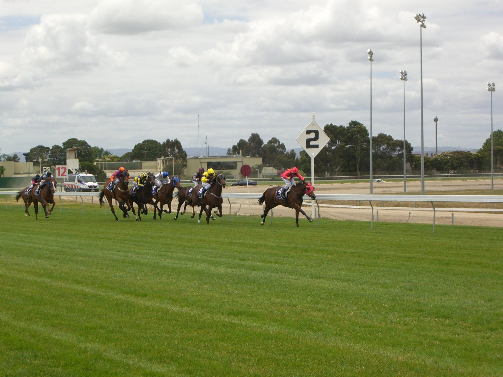

160 escolares de Newmarket pasan una semana dentro de la industria del turf de la mano de Godolphin
Mientras Godolphin invertía 28 millones de libras en 25 yearlings del Book 1 de Tattersalls, alumnos de la Newmarket Academy seguían las subastas desde la grada alta.

La escena resume el doble frente de la operación de Sheikh Mohammed Al Maktoum en Newmarket. En el ring, compras que benefician directamente a criadores y pinhookers. Arriba, unos 160 chicos de 12 y 13 años, todo el Year 8 de la Newmarket Academy, aparcaban el currículo durante una semana para aprender cómo funciona el negocio del purasangre.
Es la Dubai Future Champions Education Week, que coincide con las dos jornadas del Dubai Future Champions Festival en el Rowley Mile. El programa, que este año cumple su undécima edición dentro del Newmarket Academy Godolphin Beacon Project, incluyó visitas a Dalham Hall Stud, al National Horseracing Museum, a los galopes y a varias cuadras. Los alumnos también montaron en la Pony Racing Academy de la British Racing School y pasaron un día en las carreras.
«Hay un enorme equipo financiero en Tattersalls, hay clínicas veterinarias, medios, hostelería, catering: el abanico de empleos que hacen funcionar este deporte es enorme», explicó Penny Taylor, responsable de las acciones benéficas de Godolphin en Reino Unido. Según Taylor, la organización desarrolla unas 30 iniciativas más a lo largo del año con todos los cursos del centro. «Todos coincidimos en que tenemos que implicar a los jóvenes».
El programa de carreras del viernes llevó esos proyectos a los nombres de las pruebas: el Beacon Project, el programa Godolphin Lifetime Care para caballos retirados, los Thoroughbred Industry Employee Awards, con 128.000 libras en premios para el personal de yeguadas y cuadras, Godolphin Under Starters Orders y la Newmarket Pony Academy.
Godolphin financió además una nueva biblioteca en la reforma de la Newmarket Academy, con proyectos similares en Irlanda y Francia, y mantiene el programa Godolphin Flying Start para titulados.
La vinculación de los Maktoum con esta reunión arranca en 2000, cuando Darley patrocinó por primera vez los Dewhurst Stakes. Antes de las carreras de viernes y sábado desfila la RoR Parade, con la ganadora de Grupo 2 Mischief Magic como embajadora. El sábado, en palabras de Taylor, «es el día de Darley».
Por Martín Larrañeta